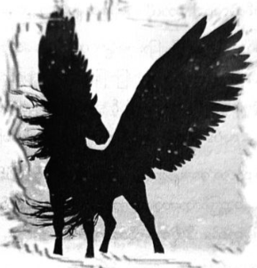

ဝက်ပျံ
ပလာဇာဟိုတယ် ပြန်ရောက်လျှင် တာလီယာက ချက်ချင်း မေးလိုက်သည်။
“ပရိုမီးသီးယပ်စ် နင့်ကို ဘာပြောတာလဲ”
မပြောချင် ပြောချင်ဖြင့် မေကတ်စ်တဲလ်လန်၏ အိမ်ထဲမှ အကြောင်းများကို ပါစီ ပြောပြလိုက်သည်။
“အဲဒီညက အတော်ဆိုးတယ… အန်နာဘတ်က ငယ်လွန်းသေးတော့ သူဘာမြင်သလဲ သူ့ဟာသူတောင် နားလည် ပုံ မရဘူး … လုပ်ခ် စိတ်ပျက်နေတာကိုပဲ သိတယ် …”
စင်ထရယ်ပန်းခြံထဲသို့ ပါစီ လှမ်းမျှော်ကြည့်နေမိသည်။ မြောက်ဘက်တွင် မီးလောင်နေဆဲ ဖြစ်သော်လည်း အကြီးအကျယ်လောင်ခြင်း မဟုတ်။ ကျန်တစ် မြို့လုံး ထူးဆန်းစွာပင် အေးအေးချမ်းချမ်းပုံစံ ရှိနေသည်။
“မေကတ်စ်တဲလ်လန် ဘာလို့ အဲလိုဖြစ်သွားရတာလဲ … နင် သိလား”
“သူ့အမေကို ငါ ထူးထူးခြားခြား ပုံစံမျိုးနဲ့ တစ်ခါမှ မတွေ့ဖူးဘူး … မျက်လုံးတွေ အရောင်တောက်လာတာ … ထူးထူးခြားခြားတွေ လျှောက်ပြောတာကိုတော့ လုပ်ခ်က ပြောပြခဲ့ဖူးပါတယ် … ဘာကြောင့် အဲလိုဖြစ်သွားရသလဲ ဆိုတာတော့ ငါလည်း မသိဘူး … လုပ်ခ် သိခဲ့ရင်တောင် ငါတို့ကို လုံးဝပြောမပြခဲ့ဘူး …”
“ဟားမီးစ် သိတာ သေချာတယ် … တစ်ခုခုကြောင့် လုပ်ခ်ရဲ့ အနာဂတ်ကို မေက မြင်နိုင်ပုံပဲ … ဘာဖြစ်လာမယ် ဆိုတာကို ဟားမီးစ်ကလည်း သိနေတယ် … ခရိုနော့စ်ကို လုပ်ခ် ကူညီမယ်ဆိုတာ သိနေတယ်”
တာလီယာ မျက်မှောင်ကုတ်သွားသည်။
“အဲလောက် သေသေချာချာ ပြောလို့ရပါ့မလား … ပရိုမီးသီးယပ်စ်က နင့်ကို အာရုံတွေ ထွေပြားအောင် လုပ်နေတာလည်း ပါလိမ့်မယ် … ဖြစ်ခဲ့သမျှကို အဆိုးအမြင်နဲ့ ပြမှာပေါ့… ဟားမီးစ်က လုပ်ခ်ကို ချစ်ပါတယ် … သူ့မျက်နှာ မြင်ရုံနဲ့ ငါ သိပါတယ် … အဲနေ့ညက ဟားမီးစ် ရောက်နေတာ မေ့ကို လာပြုစုပေးနေတာ … သူက အရမ်းကြီး မဆိုးလှ ပါဘူး ...”
“ဒါပေမဲ့ မှားတာက မှားတာပဲလေ… လုပ်ခ်က ကလေးလေးပဲ ရှိသေးတာ ဟားမီးစ်က လုံးဝမကူညီခဲ့ဘူး… ထွက် မပြေးအောင် မတားခဲ့ဘူး …”
တာလီယာမှာ အသက်မကြီးတော့သော်လည်း ပို၍ စွမ်းအားကြီးလာပုံရပြီး အာတီးမစ်၏ ငွေရောင်အလင်းကို သူမ ခန္ဓာကိုယ်ပေါ်တွင် မြင်နိုင်၏။
“ပါစီ … လုပ်ခ်အတွက် စိတ်မကောင်း ဖြစ်မနေနဲ့တော့ … ငါတို့မှာ ပြဿနာတွေ အများကြီးရယ် … နတ်သွေး နှောတဲ့ ကလေးတိုင်းမှာ သူတို့မိဘနဲ့ ပြဿနာ တက်နေကြပဲ … လုပ်ခ်ရဲ့ ဆုံးဖြတ်ချက်ကိုက မှားတာ … ဘယ်သူမှ သူ့ကို အဲဒီလမ်း ရွေးပါလို့ အတင်း မတိုက်တွန်းဘူး … ပြောရရင် …”
ပတ်ဝန်းကျင်တွင် လူသူမရှိကြောင်း သေချာမှ တာလီယာက စကားကိုဆက်၏။
“ငါ စိတ်ပူတာက အန်နာဘတ်ပဲ … လုပ်ခ်နဲ့ တိုက်ပွဲထဲမှာ ရင်ဆိုင်ဖို့ ဖြစ်နိုင်ပါ့မလား … သူနဲ့ လုပ်ခ်ရဲ့ သံယောဇဉ် က မသေးဘူး”
“ဘာမှ မဖြစ်နိုင်ပါဘူး …”
“သူ့အမေ အိမ်က ထွက်လာပြီး ကတည်းက လုပ်ခ်က အရင်လို မဟုတ်တော့ဘူး … အရမ်း မိုက်ရူးရဲ ဆန်လာ တယ် … တစ်ခုခုကို လုပ်ပြချင်နေသလိုပဲ … နောက်ကျတော့ ဂရိုဗာနဲ့တွေ့ပြီး ငါတို့သင်တန်းကို သွားကြတယ် … ငါတို့ အန္တရာယ်တွေ ဆက်တိုက်တွေ့ရတဲ့ အကြောင်းတွေထဲမှာ လုပ်ခ် ဂရုမစိုက်တာလည်း ပါတယ်… တွေ့သမျှ မိစ္ဆာတိုင်းကို သူက ရင်ဆိုင်ချင်နေတယ်… အန်နာဘတ်က ဒါကို ပြဿနာလို့ မထင်ဘူး … လုပ်ခ်က သူ့သူရဲကောင်းကြီး … မိဘ တွေကြောင့် စိတ်ဓာတ်ကျ နေတဲ့ လုပ်ခ်ကို လုံးဝအထိမခံဘူး … ငါ ပြောချင်တာက … နင်လည်း ဒီလို ထောင်ချောက်ထဲ အရောက်မခံပါနဲ့ … လုပ်ခ်က သူ့သဘောနဲ့သူ ခရိုနော့စ်ကို လက်ခံ ထားတာ … ငါတို့ သူ့ကို ခွင့်လွှတ်လို့ မဖြစ်ဘူး”
မီးခိုးများကိုကြည့်ရင်း လုပ်ခ်၏ မှားယွင်းသော ရွေးချယ်မှုကြောင့် လူ ဘယ်လောက်များများ သေခဲ့ရပြီလဲဟု စဉ်းစားနေမိသည်။
“နင်ပြောတာ မမှားပါဘူး ..”
ပါစီပခုံးကို ပုတ်ရင်း တာလီယာ နှုတ်ဆက်လိုက်သည်။
“ကဲ … အမဲလိုက်အဖွဲ့ဝင်တွေကို သွားစစ်ဆေးလိုက်ဦးမယ် … ပြီးရင် ည မရောက်ခင် ခဏအိပ်ဦးမှ … နင်လည်း အိပ်လိုက်ဦး …”
“အိပ်မက်တွေကို ငါ မုန်းနေပြီ …”
“ငါ နားလည်ပါတယ် ..”
တာလီယာ၏ မျက်နှာအမူအရာကို ကြည့်ရင်း ဘာအိပ်မက်တွေများ မက်ထားသလဲ ပါစီ စဉ်းစားနေမိသည်။ နတ်သွေးနှောသူတိုင်း ကြုံရလေ့ရှိသော ပြဿနာမှာ အန္တရာယ်ကြီးကြီးရှိသည်နှင့် အိပ်မက် မကြာခဏ မက်တတ်ခြင်းပင်။
“ပါစီ … နောက်တစ်ခါ ဘယ်တော့မှ နားရမလဲ မသိနိုင်ဘူးလေ … တစ်ညလုံး စစ်ပွဲထဲ ရောက်နေမှာ … ငါတို့ အတွက် နောက်ဆုံးညလည်း ဖြစ်သွားနိုင်တယ်”
ထိုစကားမှာ နားဝင်မချိုသော်လည်း အမှန်ဖြစ်နေသည်။ စိတ်ပျက်လက်ပျက် ခေါင်းညိတ်ရင်း ပန်ဒိုရာမြေအိုးကို တာလီယာ့အား လှမ်းပေးလိုက်၏။
“ဟိုတယ်ခန်းထဲ ပိတ်ပြီး သိမ်းထားပေးပါ … ငါနဲ့ မြေအိုး ဓာတ်မတည့်ဘူး”
တာလီယာက ပြုံးရင်း …
“စိတ်ချ”
အနီးရှိ ဆိုဖာပေါ်တွင် လှဲရင်း အိပ်ပျော်သွားသောအခါ အိပ်မက်ဆိုးများက အသင့်စောင့်ကြိုနေကြသည်။
အဖေ့ရေအောက်နန်းတော်ကြီးကို မြင်ရပြီး ယခုအခါ ရန်သူများမှာ ပို၍နီး ကပ်လာကြပေပြီ။ နန်းတော်နှင့် ကိုက် ရာဂဏန်းသာဝေးပြီး ခံတပ်နံရံများအားလုံး ပြိုကျ ပျက်စီးနေကြ၏။ ပါစီ ရောက်ခဲ့စဉ်က စစ်ဌာနချုပ် လုပ်ထားသော နတ်ဘုရားကျောင်းမှာ ဂရိမီးဗုံးများကြောင့် အစိမ်းရောင်မီးများ ဟုန်းဟုန်းတောက်နေကြသည်။
လက်နက်တိုက်ထဲတွင် တိုင်ဆန်နှင့် အခြားဆိုက်ကလော့များမှာ နေ့လယ်စာ စားရန် ခေတ္တနားနေကြပြီး ဧရာမ မြေပဲယို အိုးကြီးထဲမှ နှိုက်စားနေကြခြင်း ဖြစ်သည်။ ရေအောက်တွင် မြေပဲယိုအရသာ မည်သို့ရှိမည်ကို ပါစီ မသိချင်။ ကြည့်နေစဉ်မှာပင် လက်နက်တိုက်၏ နံရံ ပေါက်ကွဲ ပြိုကျသွား၏။ ဆိုက်ကလော့ စစ်သည် တစ်ယောက် အတွင်းသို့ ဒယိမ်းဒယိုင်ဖြင့် ဝင်လာကာ စားပွဲပေါ်သို့ လဲပြိုကျသွားခဲ့သည်။ ကူညီရန် တိုင်ဆန် ဒူးထောက် ထိုင်လိုက်သော်လည်း နောက်ကျသွားခဲ့ပြီး ဆိုက်ကလော့မှာ ပင်လယ်ရေထဲ၌ ပျော်ဝင် ပျောက်ကွယ်သွားခဲ့သည်။
အပေါက်နေရာသို့ ရန်သူဘီလူးရောက်လာချိန်တွင် တိုင်ဆန်က ကျဆုံးသွားသော ဆိုက်ကလော့စစ်သည်၏ တင်းပုတ်ကို ကောက်ကိုင်လိုက်သည်။ ထို့နောက် ပန်းပဲဖိုမှ ဆိုက်ကလော့များဘက် လှည့်ကာ တစ်စုံတစ်ရာကို အော်ပြော လိုက်ပြီး “ပိုဆိုက်ဒွန်အတွက်” ဟု ယူဆရသော်လည်း တိုင်ဆန့် ပါးစပ်ထဲတွင် မြေပဲယိုအပြည့် ရှိနေသဖြင့် “ဝူးဝူးဝါးဝါး အတွက်” ဟုသာ ကြားရ၏။ ပန်းပဲဆရာ အားလုံး တူများ၊ ဆောက်များကို ဆွဲကိုင်ကြပြီး “မြေပဲယိုကွ”ဟု သံပြိုင် အော်ဟစ်ကာ တိုက်ပွဲထဲသို့ တိုင်ဆန့်နောက်မှ ပြေးလိုက်သွားကြတော့သည်။
ထို့နောက် မြင်ကွင်းမှာ ပြောင်းလဲသွားပြီး ရန်သူ့စခန်းတွင်းရှိ အီသန်နာကာ မူရာကို မြင်လာရသည်။ စစ်တပ် ကြီးမှာ အင်အားကြီးမားပြီး ကျောချမ်းစရာပင် ဖြစ်သည်။ ထို့အပြင် ပို၍ ကျောချမ်းရခြင်းမှာ စခန်းချထားသော ခြံဝင်းကြီးထဲ၌ ကျောက်ရုပ်တုများစွာ ရှိနေပြီး ထုံးစံအတိုင်း ခြံဝရှိ ဆိုင်းဘုတ်ကို ပါစီ ဖတ်မရသော်လည်း “အန်တီအမ်” ၏ ကျောက်ပန်းပုဥယျာဉ်ဟု သိနေသည်။
ဤနေရာအကြောင်း ပါစီ မတွေးမိသည်မှာ နှစ်အတန်ကြာခဲ့ပေပြီ။ မည်သူမှ စောင့်ရှောက်သူ မရှိသဖြင့် ရုပ်တု များမှာ ကျိုးပဲ့နေကြပြီး ဂရိုဗာဦးလေး ဖာဒီနန် ရုပ်တု၌ လက်တစ်ဖက် မရှိတော့။ ခြံဝင်းကို ဝန်းရံလျက် ရွက်ဖျင်တဲနှင့် မီးပုံ ရာချီ ရှိနေသည်။ အများစုမှာ မိစ္ဆာများဖြစ်ကြသော်လည်း လူသား ကြေးစားစစ်သည်များကို တွေ့ရသလို ချပ်ဝတ် တန်ဆာနှင့် နတ်သွေးနှောသူများကိုလည်း မြင်ရသည်။ ခရမ်းရောင်နှင့် အနက်ရောင်အလံကြီးမူ ဧရာမ ဟိုက်ပါဘိုရီယန် ဘီလူးနှစ်ကောင် က စောင့်ကြပ်နေ၏။
မီးပုံတစ်ခုနားတွင် အီသန်ထိုင်နေပြီး အနီးတွင် အခြားသော နတ်သွေးနှော သူများကိုပါ မြင်နိုင်၏။ ဂိုထောင် တံခါး ပွင့်လာပြီး အတွင်းမှ ပရိုမီးသီးယပ်စ် ထွက်လာသည်။
“နာကာမူရာ … သခင်က မင်းကို တွေ့ချင်လို့ …”
ပင်ပန်းနွမ်းနယ်စွာဖြင့် အီသန် ထလိုက်သည်။
“ဘာဖြစ်လို့လဲ …”
“သူ့ကို မေးကြည့်လေ …”
ခါးပတ်မှ ဓားကို သေချာပြင်ဆင်ရင်း ဂိုထောင်ထဲသို့ အီသန်ဝင်သွား၏။ အမိုးတွင် အပေါက်ကြီးတစ်ပေါက် ပေါက်နေသည်ကလွဲ၍ ဂိုထောင်ထဲရှိ အနေအထားမှာ ပါစီ ရောက်ခဲ့စဉ်ကနှင့် အတူတူပင်ဖြစ်သည်။ ကြောက်လန့်ကာ အော်ဟစ်နေသူများ၏ ကျောက်ရုပ်များ ရှိနေပြီး အခန်းအလယ်တွင် ရွှေရောင်ပလ္လင်ကြီးကို မြင်နိုင်၏။ ခရိုနော့စ် ထိုင်နေပြီး ပေါင်ပေါ်တွင် တံစဉ်ကို တင်ထားသည်။ ဂျင်း ဘောင်းဘီနှင့် တီရှပ်ကိုသာ ဝတ်ထားပြီး မျက်နှာမှာ မကြည်လင် သဖြင့် လူနှင့်ပင် တူသေးတော့သည်။ အီသန်ကိုမြင်လျှင် မျက်လုံးများမှာ ရွှေရောင် တောက်လာကြပြီး ကျောချမ်းဖွယ် ပြုံးလိုက်၏။
“နာကာမူရာ … ခုနက သွားတဲ့ ငြိမ်းချမ်းရေး ကမ်းလှမ်းတဲ့ခရီးကို မင်း ဘယ်လိုမြင်သလဲ …”
အတန်ကြာ စဉ်းစားပြီးမှ အီသန် ပြန်ဖြေလိုက်သည်။
“ကျွန်တော့်ထက်စာရင် ပရိုမီးသီးယပ်စ် အရှင်က ပိုပြီးဖြေနိုင်ပါလိမ့်မယ်”
“ငါက မင်းကို မေးနေတာလေ …”
ခရိုနော့စ်ပတ်ဝန်းကျင်ရှိ အစောင့်များကို မျက်စိကစားရင်း အီသန် ဖြေရန် ကြိုးစားနေ၏။
“ဂျက်ဆန် … ဘယ်တော့မှ လက်နက်ချမယ် မထင်ဘူး …”
ခရိုနော့စ် ခေါင်းညိတ်လိုက်သည်။
“တခြားကော ဘာတွေ ပြောချင်သေးလဲ …”
“မ … မရှိပါဘူး အရှင်”
“မင်းကြည့်ရတာ စိတ်လှုပ်ရှားနေပုံပဲ …”
“ဒါ … ဒါက … ဒီနေရာရဲ့ သတင်းကို ကြားထားလို့ပါ”
“မီဒူဆာရဲ့ နေရာဟောင်း မဟုတ်လား … မင်း ကြားထားတာ အမှန်ပဲ … ဘယ်လိုလဲ … သဘောကျဖို့ ကောင်းတယ် မဟုတ်လား … ဆိုးတာက ဂျက်ဆန် သတ်လိုက်ပြီး ကတည်းက မီဒူဆာ ပြန်ရှင်မလာသေးတာပဲ … ဒီတော့ သူ့ရဲ့ အရုပ်ဂိုထောင်ထဲ ရောက်သွားမှာ မစိုးရိမ်ပါနဲ့ … ပြီးတော့ ဒီအခန်းထဲမှာ မီဒူဆာထက် ကြောက်စရာ ကောင်းတဲ့ သူတွေ ရှိနေကြတာပဲ”
အာလူးကြော် ဆူဆူညံညံ စားနေသည့် လက်စ်ရီဂိုးနီးယန်း ဘီလူး တစ်ကောင်အား ကြည့်ရင်း ခရိုနော့စ် လက်ဝှေ့ယမ်းလိုက်လျှင် ဘီလူးမှာ တုံ့ခနဲ ရပ်တန့် သွား၏။
“ဘာလို့ ကျောက်ရုပ်အဖြစ် ပြောင်းပစ်မှာလဲ … အချိန်ကို ရပ်ပစ်နိုင်တာပဲ”
သူက ရွှေရောင်မျက်လုံးများနှင့် အီသန်ကို စူးစူးစိုက်စိုက် ကြည့်လိုက်သည်။
“ငါ့ကို တစ်ခုပြောပြစမ်းပါ … ဝီလီယံဘတ်ခ် တံတားပေါ်မှာ ဘာတွေ ဖြစ်ခဲ့ကြသလဲ”
အီသန်တစ်ကိုယ်လုံး တုန်သွားပြီး နဖူးမှ ချွေးများ ရေစက်များလို ကျလာ၏။
“ကျွန်တော် မသိဘူး အရှင် …”
“မင်း သိပါတယ် … ဂျက်ဆန်ကို မင်း ဓားနဲ့ထိုးတော့ တစ်ခုခု မှားနေတယ် … အန်နာဘတ်က ဝင်ပြီး ကာကွယ် လိုက်တယ် …”
“ဟုတ်တယ် … ဝင်ကာကွယ်ပေးလိုက်တယ်”
“ပါစီက ကာယသိဒ္ဓိ ပြီးနေတာ … မင်း ကိုယ်တိုင်လည်း မြင်ခဲ့တာပဲ”
“မပြောတတ်ဘူးအရှင် … ကြည့်ရတာ မေ့ပြီး ဝင်ကာမိသလားပဲ”
“မေ့သွားသတဲ့လား … ငါ့သူငယ်ချင်း ကာယသိဒ္ဓိပြီးနေတာကို မေ့ပြီး ဝင်ကာပေးမိတယ်ဆိုတာ အဓိပ္ပာယ် ရှိသလား … ပြောစမ်း … ဓားနဲ့ မင်း ဘယ်နေရာကို ထိုးဖို့ လုပ်လိုက်တာလဲ …”
အီသန် မျက်မှောင်ကုတ်ရင်း စဉ်းစားနေ၏။
“မပြောတတ်ဘူးအရှင် … အဖြစ်အပျက်က အရမ်းမြန်လွန်းနေတယ် ဘယ်နေရာရယ်လို့ ရည်ရွယ်လိုက်တာမျိုး မဟုတ်ဘူး”
တံစဉ်ကို တတောက်တောက် ခေါက်ရင်း အေးစက်စက်အသံဖြင့် ခရိုနော့စ် က ပြောလိုက်သည်။
“ကောင်းပြီ … မင်းမှတ်ဉာဏ်တွေ ပြန်ကောင်းလာရင် …”
ထိုအခိုက်မှာပင် ခရိုနော့စ်မျက်နှာ ရှုံ့မဲ့သွားပြီး ရပ်တန့်နေသော ဘီလူးမှာ ပုံမှန်ပြန်ဖြစ်ကာ အာလူးကြော်ကို ဆက်ဝါးနေ၏။ ပလ္လင်ပေါ်သို့ ခရိုနော့စ် ယိုင်ကျ သွားသည်။
“အရှင် …”
“ငါ …”
အသံမှာ အင်အားနည်းပါးလှပြီး လုပ်ခ်၏အသံ ဖြစ်နေသည်။ ထို့နောက် ခရိုနော့စ်၏ မျက်နှာအမူအရာ ပြန်မာကျော သွားကာ ခန္ဓာကိုယ်ကို အမိန့်ပေးကြည့် သည့်ပမာ လက်ချောင်းများကို ကွေးလိုက် ဆန့်လိုက် လုပ်ကြည့် နေသည်။
“ဘာမှမဟုတ်ပါဘူး … အသေးအမွှား ပြဿနာလေးပါ …”
အီသန်က ခြောက်နေသော နှုတ်ခမ်းကို လျှာဖြင့် သပ်လိုက်ရင်း …
“လုပ်ခ်က ခုထိ ခုခံနေတုန်းပဲ မဟုတ်လား …”
“အဓိပ္ပာယ်မရှိတာ … ပေါက်ကရတွေ လျှောက်ပြောနေရင် မင်းလျှာကို ဖြတ်ပစ်မယ် … ကောင်လေးရဲ့ ဝိညာဉ် မရှိတော့ဘူး … ဒီခန္ဓာကိုယ်နဲ့ ငါ အသားမကျ သေးတာ … အနားယူဖို့ လိုနေတာကိုက စိတ်ပျက်ဖို့ကောင်းတယ် … ဒါက ယာယီ ပါပဲလေ …”
“အရှင့် အမိန့်အတိုင်းပါပဲ ...”
အစိမ်းရောင် ချပ်ဝတ်တန်ဆာနှင့် သရဖူဆောင်းထားသော ဒရာကာနေး တစ်ကောင်ကို ခရိုနော့စ်က အမိန့်ပေး လိုက်သည်။
“နင်က ဘုရင်မ မဟုတ်လား …”
“ဟုတ်ပါတယ်အရှင်”
“ငါတို့ လက်ဆောင်လေး လွှတ်ပေးဖို့ အဆင်သင့်ပဲလား”
“အဆင်သင့်ပါပဲ အရှင် …”
“ကောင်းပြီလေ… ငါ့ညီ ဟိုက်ပါရီယွန်ကို ပြောလိုက်… အဓိက အင်အားနဲ့ စင်ထရယ်ပန်းခြံရဲ့ တောင်ဘက်ကို တိုက်ခိုင်းလို့ … သွေးနှောတဲ့ ကောင်လေးတွေ ဝရုန်းသုန်းကား ဖြစ်နေရင် သေချာခုခံနိုင်မှာ မဟုတ်ဘူး … သွားတော့ အီသန် … မှတ်ဉာဏ်ကောင်းအောင် လုပ်ထား … မန်ဟက်တန်ကို သိမ်းပြီးမှ ထပ်စကားပြောကြမယ် …”
အီသန် ဦးညွတ်လိုက်ချိန်မှာပင် ပါစီ့အိပ်မက်မှာ ပြောင်းလဲသွားပြန်သည်။ သင်တန်းရှိ အိမ်ကြီးကို မြင်လာရပြီး ခေတ်မတူကြောင်း သတိထားမိလိုက်သည်။ ဘောလီဘောကွင်းထဲရှိ သင်တန်းသားများမှာ ၉ဝ ပြည့်နှစ်များဆီက ဆံပင် ပုံစံများနှင့် ဖြစ်ပြီး မြင်ရသောမိစ္ဆာများ ကြောက်လန့် ထွက်ပြေးနိုင်သောပုံစံမျိုးပင်။
ဝရန်တာတွင် ခိုင်ရွန်ရှိနေပြီး သူနှင့်အတူတူ ဟားမီးစ်နှင့် ကလေး ချီထားသော အမျိုးသမီး တစ်ယောက်ကိုပါ တွေ့ရသည်။ ဟားမီးစ်မှာ ပုံမှန်အတိုင်းပင် အားကစားဝတ်စုံနှင့် တောင်ပံပါသော ဖိနပ်ကို စီစဉ်ထားသည်။ အမျိုးသမီးမှာ အရပ်မြင့်ကာ လှပပြီး အဝါရောင်ဆံပင်၊ တောက်ပသော မျက်လုံးများရှိကာ ရင်းနှီး ခင်မင်စွာဖြင့် ပြုံးနေ၏။ လက်ထဲမှ ကလေးမှာ တလူးလူး တလွန့်လွန့်နှင့် ရှိနေပြီး သွေးနှောသင်တန်းအား သဘောကျသည့်ပုံမရှိ။ ခိုင်ရွန့်ပုံစံမှာ စိတ်လှုပ်ရှား နေပုံ ရသည်။
“တွေ့ရတာ ဝမ်းသာပါတယ် … သင်တန်းကို လူသာမန်တစ်ယောက် ရောက်မလာတာ ကြာလှပြီ”
“မြှောက်မပေးနဲ့ ခိုင်ရွန် … မေ … ဒီလိုလုပ်လို့ မဖြစ်ဘူး …”
ထိုအမျိုးသမီးမှာ မေကတ်စ်တဲလ်လန်ဟု တအံ့တဩ သိလိုက်ရသည်။ ပါစီ တွေ့ဖူးသော အဘွားအိုနှင့် လုံးဝ မတူဘဲ အမြဲပြုံးနေကာ ပတ်ဝန်းကျင်ကိုပါ စိတ်ပျော်ရွှင်စေနိုင်သည့်ပုံမျိုး ဖြစ်နေသည်။ ကလေးကို ချော့မြူရင်း မေက ဆို၏။
“သိပ်လည်း စိတ်မပူပါနဲ့ … ရှင်တို့မှာ အော်ရကယ် လိုနေတယ် မဟုတ်လား … ရှင်တို့ နတ်ဆရာမ သေတာ နှစ် နှစ်ဆယ်လောက် ရှိပြီ မဟုတ်လား”
“မကတော့ဘူး …”
ခိုင်ရွန်က စိတ်မကောင်းစွာဖြင့် ပြောသည်။
ဟားမီးစ်က စိတ်ပျက်စွာဖြင့် …
“အဲဒီဇာတ်လမ်းကို ပြောပြတာ အလုပ်လျှောက်ဖို့ မဟုတ်ဘူး မေ … ဘယ်လောက် အန္တရာယ်ကြီးသလဲ သူ့ကို ရှင်းပြပါ ခိုင်ရွန် …”
“အရမ်းအန္တရာယ်ကြီးတယ်… အဲဒါကြောင့် ဘယ်သူ့ကိုမှ ကြိုးစားခွင့် မပေးခဲ့ဘူး … ဘာဖြစ်သွားသလဲ မပြော နိုင်ဘူး … ဒါပေမဲ့ ကြည့်ရတာ လူတွေ အကုန် အော်ရကယ်ရဲ့ ဝိညာဉ်ကို လက်မခံနိုင်ကြတော့ဘူး”
“ကျွန်မတို့ ဆွေးနွေးပြီးသား … ကျွန်မ မကြောက်ဘူး … အကျိုးရှိတာ တစ်ခုခု လုပ်ဖူးချင်တယ် ဟားမီးစ် … ကျွန်မ အနာဂတ်ကို ကြိုမြင်တတ်တာ အကြောင်း ရှိရမယ် …”
“ရပ်လိုက်” ဟု မေကတ်စ်တဲလ်လန်အား ပါစီ အော်ပြောလိုက်ချင်သည်။ ဘာဖြစ်မလဲ ပါစီ ကြိုသိနေပြီး သူမ ဘယ်လို ဘဝပျက်ခဲ့သလဲ ပါစီ သဘောပေါက် လာ၏။ သို့သော် အိပ်မက်ထဲတွင် ထုံးစံအတိုင်း အသံထွက်မရသလို လှုပ်၍လည်း မရ။ ဟားမီးစ်မှာ စိတ်ပူသည်ထက် နာကျင်နေပုံက ပို၏။
“အော်ရကယ် ဖြစ်သွားရင် လက်ထပ်လို့ မရတော့ဘူး … ငါနဲ့ တွေ့ ခွင့်မရှိတော့ဘူး …”
“ရှင်နဲ့ ကျွန်မ ထာဝရ နေကြရမှာမှ မဟုတ်တာ … မကြာခင် ရှင့်လမ်း ရှင် ဆက်လျှောက်မှာပဲ မဟုတ်လား … ရှင်က နတ်လေ … သေမျိုးမှ မဟုတ်တာ …”
ထိုစကားကို ဟားမီးစ် ငြင်းရန်ပြင်၏။
“ကျွန်မ စကား မမှားဘူး ဆိုတာ ရှင် သိပါတယ် … ကျွန်မ စိတ်ဆင်းရဲမှာကို စိတ်မပူပါနဲ့ … ကျွန်မတို့မှာ သားလေးလည်း ရှိသေးတာပဲ … နတ်ဆရာမ လုပ်လည်း လုပ်ခ် ကိုတော့ မွေးလို့ရသေးတယ် မဟုတ်လား …”
ခိုင်ရွန်က ချောင်းတစ်ချက်ဟန့်လိုက်ရင်း …
“ဟုတ်တော့ ဟုတ်ပါတယ် … ဒါပေမဲ့ ကလေးမွေးဖူးတဲ့ နတ်ဆရာမ ဆိုတာ မရှိခဲ့ဖူးတော့ ဘာဖြစ်လာမလဲ မပြောနိုင်ဘူး … အော်ရကယ်ရဲ့ ဝိညာဉ် လက်မခံခဲ့ရင် ...”
“အဆင်ပြေမှာပါ ….”
မေက အတင်းပင် အာမခံနေ၏။ “မဖြစ်ဘူး” “မလုပ်နဲ့”ဟု ပါစီ အော်ပြော လိုက်ချင်သည်။ ကလေးကို မေ ကတ်စ်တဲလ်လန် နမ်းလိုက်ပြီး ဟားမီးစ်လက်ထဲ ပေးထားလိုက်သည်။
“ခဏနေ ပြန်လာခဲ့မယ် …”
ယုံကြည်စွာဖြင့် ပြုံးပြပြီးနောက် မေကတ်စ်တဲလ်လန်မှာ အပေါ်ထပ်သို့ တက်သွားခဲ့သည်။ ခိုင်ရွန်ရော ဟားမီးစ်ပါ တိတ်ဆိတ်နေကြပြီး ကလေးမှာ တလူးလူး တလွန့်လွန့်နှင့် ရှိနေ၏။
အိမ်ကြီး၏ ပြတင်းပေါက်များထဲမှ အစိမ်းရောင်အလင်းများ ဖြာထွက်လာသဖြင့် ဘော်လီဘော ကစားနေသူ များပင် ထပ်ခိုးဆီ လှမ်းကြည့်လိုက်ကြသည်။ ဟားမီးစ်မှာ တစ်စုံတစ်ရာကို ခံစားရဟန်ဖြင့် ကလေးကို ခိုင်ရွန့်အား ပေးခဲ့ကာ ပြေးသွားသည်။ သို့သော် တံခါးဆီ မရောက်ခင်မှာပင် မေ ကတ်စ်တဲလ်လန်၏ ကြောက်လန့်တကြား အော်ဟစ်သံ စူးစူးဝါးဝါးကို ကြားလိုက်ရသည်။
ပါစီ ဝုန်းခနဲ လန့်နိုးလာပြီး တစ်စုံတစ်ယောက်၏ ဒိုင်းနှင့် နဖူးဆောင့်မိ၏။
“အား …”
“ဆောရီး ပါစီ … ငါနင့်ကို နှိုးတော့မလို့ …”
သူ့အနားတွင် ရပ်နေသော အန်နာဘတ်ကို တွေ့ရသည်။ ရုတ်တရက် ဆိုသလို ကိစ္စအတော်များများကို သူ နားလည်လာခဲ့သည်။ မေကတ်စ်တဲလ်လန်မှာ နတ်ဆရာ ဖြစ်ရန် ကြိုးစားခဲ့ပြီး ဟေးဒီးစ်၏ ကျိန်စာက ဒဲလ်ဖိုင်ဝိညာဉ်ကို ချုပ်နှောင်ထားကြောင်း မသိခဲ့။ ခိုင်ရွန်ကော ဟားမီးစ်ပါ မသိကြ။ ထိုတာဝန်ကိုယူရန် ကြိုးစားရင်း မေ တစ်ယောက် ရူးသွပ် သွားလိမ့်မည်ဟု သူတို့ ကြိုမသိခဲ့ကြ။
“ပါစီ … နင် ဘာဖြစ်နေတာလဲ …”
“ဘာ … ဘာမှမဖြစ်ပါဘူး … ချပ်ဝတ်တန်ဆာတွေနဲ့ နင် ဘာလုပ်တာလဲ … နားနေရမယ့်ဟာကို …”
“ငါ ဘာမှမဖြစ်ဘူး … နတ်ဩဇာတွေနဲ့တင် ပြန်ကောင်းနေပြီ …”
ထိုသို့ ပြောသော်လည်း အန်နာဘတ် မျက်နှာမှာ ဖြူဖျော့နေဆဲဖြစ်ကာ ညာလက်ကို လှုပ်ရုံကလေးသာ လှုပ်နှိုင်၏။
“အပြင်ထွက်ပြီး တိုက်ခိုက်ဖို့ မစဉ်းစားနဲ့ …”
ကောင်းသော လက်တစ်ဖက်နှင့် အန်နာဘတ် တွဲထူသောအခါ ပါစီ့ခေါင်း မှာ တဒုန်းဒုန်းကိုက်နေခဲ့ပြီး အပြင်တွင် ကောင်းကင်မှာ ခရမ်းရောင်နှင့် အနီရောင် သမ်းနေပေပြီ။
“နင့်အတွက် အင်အားတစ်ယောက် လျော့လို့မရဘူးလေ … ငါ ဒိုင်းထဲကပဲ ကြည့်နေတာပါ … စစ်တပ်တစ်တပ် က …”
“စင်ထရယ်ပန်းခြံကို တောင်ဘက်က လာနေတယ် မဟုတ်လား … ငါ သိပြီးပြီ …”
အိပ်မက်၏ တစ်စိတ်တစ်ပိုင်းကို ပါစီ ပြောပြခဲ့သည်။ မေကတ်စ်တဲလ်လန်၏ အကြောင်းကို ချန်လှပ်ခဲ့ပြီး လုပ်ခ်နှင့် ခရိုနော့စ် ခန္ဓာကိုယ်ထဲတွင် တိုက်ပွဲဖြစ်နေသည်ဟု အီသန် ထင်ပုံရကြောင်းကိုလည်း ပြောမပြဖြစ်ခဲ့။ နေရင်း ထိုင်ရင်း အန်နာဘတ် မျှော်လင့်နေမည်ကို မဖြစ်စေချင်။
“နင့် ဟာကွက်နေရာကို သံသယ ဝင်သွားမယ်လို့ နင် ထင်သလား”
“ငါလည်း မပြောတတ်ဘူး … ခရိုနော့စ်ကိုတော့ ဘာမှမပြောဘူး… ဒါပေမဲ့ သူသာ သိသွားရင် …”
“မဖြစ်ဘူး … သူ့ကို တားမှ …”
“နောက်တစ်ခါ ဒီ့ထက်ပြင်းပြင်း ထုပေးရမယ် … ဒါနဲ့ ခရိုနော့စ် ငါတို့ကို ဘာလက်ဆောင်ပေးဖို့ လုပ်နေတယ် ထင်လဲ …”
အန်နာဘတ် ခေါင်းခါရင်း …
“ငါလည်း မသိဘူး …… ဒိုင်းထဲမှာတော့ ဘာမှမမြင်မိဘူး … ဘာလက်ဆောင် မှ ငါတော့ သဘောမကျဘူး …”
“ဟုတ်တယ် …”
“ငါ လိုက်လာမယ် ဆိုတာကို နင်က တားဦးမှာလား”
“ဟင့်အင်း …. လိုက်ခဲ့လေ …”
အန်နာဘတ်၏ ရယ်သံကို ကြားရသည်မှာ စိတ်ချမ်းသာစရာ ကောင်း၏။ ပါစီ တို့ အင်အားပြန်စုစည်းရန် ထွက်လာခဲ့ကြသည်။ တာလီယာနှင့် အဆောင်မှူးများ အသင့်စောင့်ဆိုင်းနေကြပြီး နေမှာ ဝင်လုဆဲဆဲ ဖြစ်နေပေပြီ။ လမ်းမီးများ လင်းလာပြီး မီးအများစုမှာ အချိန်နှင့် အလိုလိုဖွင့်ခြင်း ဖြစ်သည်။ မြောက်ဘက်အရပ်ကို မြားနှင့် ညွှန်ပြရင်း တာလီယာက အတည်ပြု၏။
“လာနေကြပြီ … ဟာလမ်းမြစ်ကို ဖြတ်လာပြီလို့ ငါ့ရဲ့ ကင်းထောက် တစ်ယောက်က သတင်းပို့တယ် … ဘယ်လိုမှ ခုခံဖို့ မလွယ်ဘူး … သူတို့စစ်တပ်အင်အား က ကြီးလွန်းတယ် …”
“သူတို့ကို ပန်းခြံထဲမှာ တားထားရမယ် … ဂရိုဗာ … အဆင်သင့်ပဲလား …”
ပါစီ မေးလိုက်လျှင် ဂရိုဗာက ခေါင်းညိတ်ပြ၏။
“အဆင်သင့်ပဲ … ငါနဲ့ သဘာဝဝိညာဉ်တွေ မိစ္ဆာတပ်ကို တားဖို့အသင့်ဆုံး နေရာပဲ ...”
“တားရမှာပေါ့ ..”
နောက်ထပ် အသံတစ်သံကို ကြားရပြီး အလွန်အိုမင်းကာ အလွန်ဝသော ဆေတာတစ်ယောက်မှာ လူအုပ်ထဲမှ ဖြတ်ကာ ရှေ့သို့တိုးလာ၏။ သစ်ခေါက်များ နှင့် လုပ်ထားသော ချပ်ဝတ်တန်ဆာကို ဝတ်ထားပြီး ဗိုက်ပူပူကို တစ်ဝက်သာ ဖုံးနိုင်၏။
“လီနီးယပ်စ် …”
“သိပ်မအံ့ဩစမ်းပါနဲ့ … ငါက ကောင်စီဥက္ကဌ … ဂရိုဗာကို ရှာဖို့ မင်း ပြောခဲ့တယ် မဟုတ်လား … ကဲ … အခု သူ့ကို ငါတွေ့ပြီ … ကောင်စီက နှင်ထုတ်ထားတဲ့ ဆေတာတစ်ယောက်တည်း ဒီမှာ ဦးဆောင်နေရတာမျိုး ဘယ်ဖြစ်သင့် မလဲ … ငါပါ ကူညီမယ် …”
လီနီးယပ်စ် နောက်မှနေ၍ ဂရိုဗာမှာ အေ့ချင်အန်ချင်သည့် အမူအရာ လုပ်ပြနေသော်လည်း ဆေဆာအိုကြီးမှာ မမြင်ဘဲ ကယ်တင်ရှင်ကြီးပမာ ပြုံးနေ၏။
“မကြောက်ကြနဲ့ … ဒီတိုက်တန်၏ စစ်တပ်ကြီးကို ငါတို့အကြောင်း ပြရမယ်”
ရယ်ရမလား၊ စိတ်ဆိုးရမလား တွေးမရသော်လည်း ပါစီ မျက်နှာကို ခပ်တည်တည် ထားနိုင်ခဲ့သည်။
“အဲ … ဂရိုဗာ … ခုဆို မင်းတစ်ယောက်တည်း မဟုတ်တော့ဘူး … အန်နာဘတ်နဲ့ အက်သီနာ အဆောင်က ဒီနေရာက ခုခံမယ် … ငါနဲ့ အမဲလိုက် အဖွဲ့ဝင်တွေ က … တာလီယာ …”
တာလီယာက ပါစီ့ပခုံးကို ပုတ်လိုက်ရင်း ….
“ဘာမှ ထပ်မပြောနေနဲ့ … အမဲလိုက်အဖွဲ့က အဆင်သင့်ပဲ”
ကျန်အဆောင်မှူးများကို ပါစီ ဝေ့ကြည့်လိုက်သည်။
“ကျန်တဲ့သူတွေရဲ့ တာဝန်ကလည်း အရေးကြီးတာပဲ … မန်ဟက်တန်ရဲ့ တခြားဝင်ပေါက်တွေကို ကာကွယ်ရမယ် … ခရိုနော့စ် ဘယ်လောက် ဉာဏ်များလဲ သိကြသားပဲ … စစ်တပ်ကြီးကြီးနဲ့ အာရုံလွှဲပြီးမှ တစ်နေရာရာကနေ ခိုးဝင်လာ လိမ့်မယ် … ဒီလိုမဖြစ်အောင် ကာကွယ်ဖို့က မင်းတို့တာဝန်ပဲ … အဆောင်တစ်ခုကို တံတားတစ်ခု၊ လိုဏ်ခေါင်းတစ်ခုစီ ရွေးကြ”
အဆောင်မှူးများ ခေါင်းညိတ်လိုက်ကြသည်။
“ကဲ … သွားကြစို့ … အားလုံးပဲ ကံကောင်းပါစေ”
♦️🌟♦️
မမြင်ရခင်မှာပင် ခရိုနော့စ်၏ စစ်တပ်ကြီး အသံအား ကြားကြရသည်။ အမြောက်ပစ်သံများနှင့် ဘောလုံးပွဲ အတွင်းရှိ ပရိသတ်များ၏ အသံများ ပေါင်းထားသည်နှင့် တူလှသည်။ တောအုပ်ထဲမှ ထွက်လာသော ရှေ့ပြေးတပ်ဖွဲ့ကို ဦးဆောင်လာသူမှာ ရွှေရောင်ချပ်ဝတ်တန်ဆာနှင့်ဖြစ်ပြီး အနောက်တွင် ပုဆိန်ကြီးများ ကိုင်ထားသော လက်စ်ရီဂိုနီးယန်း ဘီလူးများ ပါလာကြသည်။ နောက်မှ မိစ္ဆာများ တစ်ရာမက ထပ်၍ ချီတက်လာကြ၏။
“နေရာယူ …”
အန်နာဘတ်၏ အော်ဟစ်သံနှင့်အတူ အဆောင်သားများ အသီးသီး ခွဲထွက်သွားကြ၏။ ကမ်းခြေအတိုင်း ရန်သူများ ချီတက်လာကြလျှင် ခပ်ဝေးဝေး မရောက်ခင်မှာပင် ပါစီတို့၏ ထောင်ချောက်များ စတင် အလုပ်လုပ်ကြသည်။ ဂရိမီးဗုံးများ ပေါက်ကွဲကုန်ကြပြီး အကြီးဆုံးဘီလူးများကိုမူ အက်သီနာ အဆောင်သားများက ချိတ်များကို ကြိုးတပ်ကာ ပစ်ချိတ်ပြီး ဆွဲတင်ထားကြသည်။
ညာဘက်တောအုပ်ထဲရှိ အမဲလိုက်အဖွဲ့ဝင်များဆီမှ ငွေရောင်မြားတံများ ပြေးထွက်လာကြပြီး ဒရာကာနေး နှစ်ဆယ် သုံးဆယ်နီးပါးကို ပြာကျသွားစေသည်။ ကောင်းကင်မှ လျှပ်စီးကြောင်းတစ်ခု ထိုးဆင်းလာကာ လက်စ်ရီဂိုး နီးယန်း ဘီလူးတစ်ကောင်ကို ပြာကျသွားစေသည်။ တာလီယာ့ လက်ချက်ပင်။
ဂရိုဗာ ပလွေမှုတ်လိုက်လျှင် ရှိရှိသမျှ သစ်ပင်၊ ကျောက်တုံးနှင့် ချုံပုတ်များထဲမှ နတ်ကလေးများ ထွက်လာ ကြသည်။ ထို့နောက် သစ်ပင်စောင့် နတ်ကလေးများရော ဆေတာများပါ တင်းပုတ်ကိုယ်စီ ကိုင်မြှောက်၍ ပြေးဝင်သွား ကြသည်။ သစ်ပင်များမှာ မိစ္ဆာများကို ရစ်ပတ်ကာ ဆွဲညှစ်သတ်နေကြသလို မြက်ပင်များ ကလည်း ခြေထောက်များကို ဆွဲဖမ်းထားကြသည်။ ကျောက်တုံးများ တဝီဝီ မြည်ကာ ပျံသန်းသွားကြပြီး ဒရာကာနေးအချို့၏ မျက်နှာတည့်တည့်သို့ ထိမှန်၏။
ရန်သူများကလည်း ရှေ့သို့သာ အတင်းဆက်ချီတက်လာကြပြီး ဘီလူးများက သစ်ပင်များကို ရိုက်ချိုးပစ်သဖြင့် သစ်ပင်စောင့်နတ်ကလေးများ ပျောက်ကွယ်သွားကြသည်။ ဝံပုလွေများနှင့် ငရဲခွေးများ လုံးထွေးနေကြပြီး ရန်သူ့ လေးသည်တော်များ မြားနှင့် ပြန်ပစ်သဖြင့် အမဲလိုက်အဖွဲ့ဝင်တချို့ မြားထိကာ သစ်ပင်ပေါ်မှ ပြုတ်ကျလာကြသည်။
“ပါစီ …”
အန်နာဘတ် ညွှန်ပြသောနေရာသို့ ကြည့်လိုက်လျှင် ရေကန်ကို မိစ္ဆာများကဲ့သို့ ရှောင်ကွင်းမသွားဘဲ ရေပေါ် ဖြတ်လျှောက်ကာ လာနေသော ရွှေရောင် ချပ်ဝတ်တန်ဆာနှင့် တိုက်တန်အား မြင်လိုက်ရသည်။ ပတ်ဝန်းကျင်တွင် ဂရိ မီးဗုံးများ ပေါက်ကွဲနေသော်လည်း မီးတောက်များကို လက်ဝှေ့ယမ်းကာ စုပ်ယူပစ်နေ၏။
အန်နာဘတ်က ချက်ချင်း ခန့်မှန်းမိဟန်ဖြင့် ပြောလိုက်သည်။
“ဟိုက်ပါရီယွန်ပဲ … အလင်းရောင်ရဲ့ အရှင်သခင် … အရှေ့တိုက်တန် …”
“ဆိုးတာပဲ …”
“အက်လတ်စ်ပြီးရင်း သူက တိုက်တန်တွေထဲမှ အတော်ဆုံးစစ်သည်ပဲ … ဟိုးတုန်းက ကမ္ဘာကြီးရဲ့ ထောင့် လေးထောင့်ကို ခွဲပြီး တိုက်တန်တွေ အုပ်ချုပ်ကြတာ … ဟိုက်ပါရီယွန်က အရှေ့အရပ်ကို အုပ်စိုးတယ် … စွမ်းအား အကြီးဆုံး တိုက်တန်ပဲ … ပထမဆုံး နေနတ်ဘုရား ဟီလီယို့စ်ရဲ့ အဖေ …”
“သူ့ကို ငါ အာရုံလွှဲထားလိုက်မယ် …”
“ပါစီ … နင်တောင်မှ သူ့ကို ယှဉ်နိုင်မယ် မထင် …”
“ငါတို့တပ်တွေကိုသာ ဖရိုဖရဲ မဖြစ်စေနဲ့ …”
ဤရေကန်နားတွင် ခုခံရန် စီစဉ်ခြင်းမှာ အကြောင်းမဲ့မဟုတ်။ အာရုံစူးစိုက်လိုက်ရုံနှင့် ရေ၏ စွမ်းအားများ သူ့ခန္ဓာကိုယ်ထဲ စီးဝင်လာသည်အား ခံစားရ၏။
ရေပေါ်ဖြတ်ပြေးရင်း ဟိုက်ပါရီယွန်ဆီ ပါစီ ဦးတည်ခဲ့သည်။ ရေပေါ်လမ်း လျှောက်နိုင်သူမှာ ဟိုက်ပါရီယွန် တစ်ယောက်တည်း မဟုတ်ဟု သက်သေပြလိုက်၏။ ပေနှစ်ဆယ်အကွာသို့ ပါစီ ရောက်လာလျှင် ဟိုက်ပါရီယွန်ဓားကို မြှောက်လိုက်သည်။ သူ့မျက်လုံးများမျာ အိပ်မက်ထဲတွင် ပါစီ တွေ့ခဲ့ရသလို ရွှေရောင်ဖြစ်ကြပြီး ခရိုနော့စ်ထက် ပို အရောင်တောက်ပသဖြင့် နေလုံးနှစ်လုံးနှင့် တူနေသည်။
“ပင်လယ်နတ်ရဲ့ သားကလေးပါလား … အက်လတ်စ်ကို ကောင်းကင်အောက် ပြန်ပိတ်ဖမ်းထားကာ မင်း လက်ချက်ဆို …”
“အဲလောက် မခက်ပါဘူး … တိုက်တန်တွေမှာက ပုဇွန်ဦးနှောက်ပဲ ပါလာကြတာပဲဟာ …”
“ငါနဲ့ ရင်ဆိုင်မယ်ပေါ့ ...”
တိုက်တန်၏ ခန္ဓာကိုယ်တစ်ခုလုံး အလင်းရောင်များ အလွန်တောက်ပလာပြီး မျက်စိလွှဲထားလိုက်သည့်တိုင် ရုတ်တရက် ဘာကိုမှ ပါစီ မမြင်ရတော့။ မသိစိတ်က လှုံ့ဆော်သဖြင့် အချိန်မီကလေး ဓားကိုမြှောက်ကာ ကာကွယ်လိုက် နိုင်သည်။ ဟိုက်ပါရီယွန်၏ ဓားနှင့် ပါစီ့ဓား ရင်ဆိုင်မိလျှင် ဝုန်းခနဲ ပေါက်ကွဲသွားပြီး ဆယ်ပေ ပတ်လည် နေရာရှိ ရေများ လှိုင်းထကာ ဝဲကတော့ ထိုးကုန်ကြသည်။ လင်းလွန်းသဖြင့် ဘာကိုမှ ပါစီ မမြင်ရ။
ရေလှိုင်းများကို အာရုံစူးစိုက်ရင်း ပြန်ဆွဲခေါ်ကာ လှိုင်းများ ရောက်မလာမီ လေးတွင် ခုန်ရှောင်လိုက်သည်။
“အား ...”
ရေလှိုင်းများက ဟိုက်ပါရီယွန်ကို ရေအောက် ဆွဲချသွားပြီး အလင်းရောင်ပါ မှေးမှိန် ပျောက်ကွယ်သွားသည်။ ရေပေါ် ခြေပြန်ချလိုက်ချိန်တွင် ဟိုက်ပါရီယွန်လည်း ရေပေါ်ပြန်တက်လာ၏။ ရွှေချပ်ဝတ်တန်ဆာများမှာ ရေများ စိုရွှဲ နေပြီး မျက်လုံးများမှာ အလွန်မတောက်ပနိုင်သော်လည်း သတ်ချင်ဖြတ်ချင်စိတ်က ပိုများ လာပုံရ၏။
“မင်းကို မီးရှို့ပစ်မယ် ဂျက်ဆန် …”
ဓားချင်း ရင်ဆိုင်မိကြလျှင် လေထုတစ်ခုလုံး မီးလောင်သလို ဖြစ်လာ၏။ ပတ်ဝန်းကျင်၌ တိုက်ပွဲက ဆက်ဖြစ် နေပြီး ညာဘက်ကမ်းတွင် ညီအစ်ကိုမောင်နှမများကို အန်နာဘတ် ဦးဆောင်၍ တိုက်စစ်ဆင်နေသည်။ ဘယ်ဘက် ကမ်းပါး ပေါ်တွင် ဂရိုဗာနှင့် သဘာဝဝိညာဉ်များ အင်အားပြန်စုကာ ရန်သူများကို ချုံပုတ်များ၊ မြက်ပင်များနှင့် ဖမ်းဆီး သတ်ဖြတ်ရန် ကြိုးစားနေ၏။
“တော်ပြီ … ကုန်းပေါ်မှာ တိုက်ကြစို့ …”
“သဘောမတူဘူး”ဟု ပါစီ ပြန်မပက်နိုင်ခင်မှာပင် တိုက်တန်က အော်ဟစ်လိုက်ပြီး အလွန်ကြီးမားသော အင်အားတစ်ခုက ပါစီ့ကို ဝင်ဆောင့်၏။ တံတားပေါ်တွင် ခရိုနော့စ် လုပ်ခဲ့သော အင်အားနှင့် ဆင်ဆင်တူပြီး ကိုက်သုံးရာ ကျော်ထိ ပါစီ လွင့်စဉ်ထွက်သွားကာ မြေကြီးထဲ နစ်ဝင်သွားသည်။ ကာယသိဒ္ဓိသာ မပြီးခဲ့လျှင် တစ်ကိုယ်လုံး ရှိရှိသမျှ အရိုးများ ကျိုးကုန်လောက်သည်။ ညည်းညူရင်း ပါစီ ထ ရပ်လိုက်သည်။
“တိုက်တန်တွေ ဘာလို့ အဲလို အမြဲလုပ်တာလဲ …”
ဟိုက်ပါရီယွန်မှာ မယုံနိုင်စရာ လျင်မြန်မှုဖြင့် ပါစီ့အနားသို့ ရောက်လာခဲ့သည်။ အာရုံစူးစိုက်ရင်း ရေဆီမှ အင်အားကို ပါစီဆွဲယူလိုက်၏။ ဟိုက်ပါရီယွန် စက္ကန့်မဆိုင်းဘဲ တိုက်ခိုက်လာသည်။ သူ့တိုက်ခိုက်မှုမှာ အင်အား ကြီးမားကာ မြန်ဆန်သော်လည်း ပါစီ့ကို ဒုက္ခမပေးနိုင်။ သူ့ခြေထောက်နားတွင် မီးများ ထတောက် ချင်နေသော်လည်း ပါစီ့ ရေနှင့်တွေ့လျှင် ချက်ချင်း ငြိမ်းသွားတတ်သည်။
“ရပ်လိုက် … လေတိုက်တာကို အခုရပ် ...”
ဒေါသဖြင့် ဟိုက်ပါရီယွန် အော်နေသော်လည်း ဘာကိုပြောချင်မှန်း ပါစီ နားမလည်။ တိုက်ရခိုက်ရနှင့် နားလည်အောင် စဉ်းစားချိန်လည်း မရှိ။ တွန်းလွှတ်ခံ ရသူနှယ် ဟိုက်ပါရီယွန်မှာ ယိုင်ထိုးနေသည်။ ရေလှိုင်းများက မျက်နှာကို ဆက်တိုက် ရိုက်ခတ်နေသဖြင့် မျက်စိဖွင့်ရခက်နေပြီး လေတိုက်နှုန်းကပါ ပြင်းထန်လာသဖြင့် နောက်သို့သာ ယိမ်းယိုင်ဆုတ်ခွာနေရသည်။
“ပါစီ … မင်း ဘယ်လို လုပ်လိုက်တာလဲ …”
ဂရိုဗာ့ဆီမှ တအံ့တဩနှင့် မေးသံကို ကြားရသည်။ သူ ဘာလုပ်နေသလဲ ပါစီ စဉ်းစားမရ။ အောက်သို့ ငုံ့ကြည့်မိမှပင် ကိုယ်တိုင်ဖန်တီးထားသော လေပွေ တစ်ခုပေါ်၌ ရပ်နေမိကြောင်း သတိထားမိလာသည်။ ရေငွေ့များနှင့် အလွန်ပြင်းထန်သောလေများမှာ လေပွေတစ်ခု ဖြစ်ပေါ်နေပြီး ဟိုက်ပါရီယွန် ခြေကုပ်ယူ မရသလို ကိုက်နှစ်ဆယ် အတွင်းရှိ မြက်ပင်များအားလုံး ပြားပြားဝပ်သွားစေ၏။ ရန်သူ့ဘက်မှ လှံများဖြင့် ပစ်သော်လည်း လေပွေထဲ မဝင်နိုင်ဘဲ လွင့်စဉ်ကုန်ကြသည်။
“မိုက်တယ် … နဲနဲ ထပ်တိုးလိုက်ရအောင် …”
ပါစီ ပတ်ဝန်းကျင်တွင် မိုးကြိုးလျှပ်စီးများ လက်လာကာ တိမ်မဲများ ဖုံးလာပြီး မိုးရေများ ပို၍ လျှင်မြန်စွာ ဝဲကတော့ ထိုးလာကြသည်။ ဟိုက်ပါရီယွန် အနားသို့ ပါစီ တိုးကပ်လာသောအခါ ဟိုက်ပါရီယွန် လွင့်စဉ်ထွက်သွား၏။
“ပါစီ … သူ့ကို ဒီဘက်နား ခေါ်လာခဲ့”
ဂရိုဗာ့အော်သံကို ကြားရပြန်သည်။ ဓားကို အဆင်ပြေသလို ထိုးခုတ်ရင်း မသိစိတ်ဖြင့် လှုပ်ရှားနေလိုက်သည်။ ဟိုက်ပါရီယွန်မှာ မနည်း ခုခံကာကွယ်နေရပြီး မျက်လုံးမှ မီးတောက်များကို ထွန်းညှိရန် ကြိုးစားသော်လည်း လေပွေ ကြောင့် မအောင်မြင်ချေ။
သို့သော် ယခုကဲ့သို့ လေပွေမုန်တိုင်းကို ပါစီ ထာဝရ ထိန်းမထားနိုင်။ သူ့ အင်အား တဖြည်းဖြည်း ဆုတ်ယုတ် လာပြီး နောက်ဆုံးအဖြစ် ကြိုးစားကာ ဂရိုဗာ စောင့်နေသော နေရာအနီးသို့ ဟိုက်ပါရီယွန်အား တွန်းလွှတ်လိုက်သည်။
“ငါ့ကို ဒီလို ကစားလို့ မရဘူး …”
အော်ဟစ်ရင်းနှင့် ဟိုက်ပါရီယွန် မတ်တတ်ပြန်ရပ်လိုက်သည်။ ထိုအခိုက်မှာပင် ဂရိုဗာ၏ ပလွေသံကို ကြားရပြီး လီနီးယပ်စ်ပါ ဝင်၍ ကူညီလိုက်သည်။ ရှိရှိသမျှ ဆေတာများ ပလွေထုတ်ကာ မှုတ်လိုက်ကြပြီး ကျောချမ်းစရာ တေးသံက ဖုံးလွှမ်းသွား၏။ ကျောက်တုံးများပေါ် စမ်းရေဖြတ်စီးသွားသံနှင့် ဆင်တူပြီး ဟိုက်ပါရီယွန်၏ ခြေရင်းရှိ မြေကြီးများ အက်ကွဲလာကာ သစ်မြစ်များက သူ့ခြေထောက်ကို ရစ်ပတ်လိုက်ကြသည်။
“ဒါက ဘာတွေလဲ …”
သစ်မြစ်များကို ရုန်းဖယ်ရန် ကြိုးစားသော်လည်း ဟိုက်ပါရီယွန်မှာ အားနည်းနေဆဲ ဖြစ်သည်။ သစ်ပင်များ ထူသည်ထက် ထူထပ်လာကာ မကြာမီ သစ် မြစ်ဘွတ်ဖိနပ်ကို ဝတ်ထားသူနှယ် ဖြစ်လာသည်။
“ရပ်ကြစမ်း … မင်းတို့ တောထဲက မှော်ပညာက တိုက်တန်ကို မယှဉ်နိုင်ပါဘူး …”
သို့သော် ဟိုက်ပါရီယွန်မှာ ရုန်းလေလေ သစ်မြစ်များ၏ ဝါးမျိုမှုကို ပိုမြန်မြန် ခံရလေလေ ဖြစ်သည်။ ခန္ဓာကိုယ် ကို ရစ်ပတ်ကာ မကြာမီ သစ်ခေါက်များပါ ဖြစ်လာခဲ့သည်။ ရွှေချပ်ဝတ်တန်ဆာပါ သစ်သားများ ဖြစ်ကုန်ပြီး သစ်ပင်စည် ကြီး ဖြစ်လာခဲ့သည်။
ဂီတသံများ ဆက်တိုက် ပျံ့လွင့်နေပြီး သူတို့ခေါင်းဆောင် သစ်ပင်ဖြစ်သွားသဖြင့် မိစ္ဆာများ နောက်ဆုတ်ပြေးကြ သည်။ ဟိုက်ပါရီယွန်၏ လက်များ ဆန့်တန်း သွားကြကာ သစ်ကိုင်းကြီးများ ဖြစ်လာကြပြီး သစ်ကိုင်းလေးများ ထပ်မံ ခွဲဖြာထွက်လာကာ သစ်ရွက်များပါ ထွက်လာသည်။ သစ်ပင်မှာ မြင့်သည်ထက် မြင့်လာကာ ပင်စည်လည်း ကြီးထွား လာပြီး သစ်ပင်ပင်စည်တွင် တိုက်တန်၏ မျက်နှာသာ ကွက်ကွက်လေး ကျန်ရစ်သည်။
“မင်းတို့ ငါ့ကို ဖမ်းထားလို့ ရမယ် ထင်နေလား … ငါက ဟိုက်ပါရီယွန် … ငါက …”
အော်ဟစ်နေဆဲမှာပင် သစ်ခေါက်များက ဟိုက်ပါရီယွန်၏ မျက်နှာကို ဖုံးအုပ် သွားတော့သည်။
“တော်တော်ကြီးတဲ့ မေပဲလ်ပင်ကြီးပဲ …”
ဆေတာများစွာ ပင်ပန်းလွန်းသဖြင့် လဲကျမေ့မျောကုန်ကြသည်။ သို့သော် သူတို့၏တာဝန် အောင်အောင်မြင်မြင် နှင့် ပြီးဆုံးသွားခဲ့၏။ တိုက်တန် ဟိုက်ပါရီယွန်မှာ ဧရာမ မေပဲလ်ပင်ကြီးထဲတွင် ပိတ်မိသွားခဲ့သည်။ သစ်ပင် ပင်စည်ကပင် ပေနှစ်ဆယ်ခန့် လုံးပတ်ရှိပြီး သစ်ပင်မှာ ပန်းခြံထဲရှိ အခြားအပင်များလိုပင် မြင့်မားလှ သည်။ ပြောရလျှင် ဤနေရာ၌ ရာစုနှစ်များစွာ ပေါက်ရောက်နေခဲ့သည့်ပုံနှင့် တူ၏။
တိုက်တန်၏ နောက်လိုက်များ စတင်ဆုတ်ခွာကြပြီး အက်သီနာ အဆောင်သားများ ဝမ်းသာအားရ အော်ဟစ် လိုက်ကြသည်။ သို့သော် အောင်မြင်မှုမှာ ကြာကြာ မခံချေ။ အဘယ်ကြောင့်ဆိုသော် ခရိုနော့စ်၏ လက်ဆောင်ကြီး ရောက်လာသောကြောင့် ဖြစ်၏။
“ရိခ် …”
ကျယ်လောင်လှသော အော်သံကြီးမှာ မန်ဟက်တန်တစ်မြို့လုံး ဖုံးလွှမ်းသွားခဲ့ပြီး နတ်သွေးနှောသူများရော မိစ္ဆာ များပါ ကြောက်ရွံ့မှုဖြင့် ကြက်သေသေ ကုန်ကြသည်။ ကြောက်လန့်စွာဖြင့် ဂရိုဗာက လှမ်းပြော၏။
“ဒီအသံက ဘာလို့ ဒီလောက် တူရတာလဲ … မဖြစ်နိုင်ဘူး”
ဂရိုဗာ့အတွေးကို ပါစီ သိ၏။ လွန်ခဲ့သော နှစ်နှစ်ခန့် “ပန်” ပေးသော လက်ဆောင်မှာ ဧရာမ တောဝက်ကြီး ဖြစ်ပြီး ပါစီတို့ကို (သတ်ရန် ကြိုးစားပြီးမှ) သွားလိုရာ လိုက်ပို့ပေးခဲ့သည်။ ထိုဝက်ကြီး၏ အော်သံနှင့် ဆင်တူသော်လည်း ယခု ကြားရသောအသံမှာ ပို၍ကျယ်လောင်နေပြီး စူးရှရှနိုင်ကာ စိတ်ဆိုးနေသော ဝက်မနှင့် ပိုတူနေသည်။
“ရိခ် …”
ရေပေါ်မှ ဧရာမ ပန်းရောင်သတ္တဝါကြီး ဖြတ်ပျံသွားပြီး တောင်ပံကြီးတစ်စုံ အား သေချာမြင်ကြရသည်။
“ဝက်မကြီး … အကာအကွယ် ယူကြ”
အန်နာဘတ်၏ အော်ဟစ်သတိပေးသံကို ကြားရသည်။ တောင်ပံနှင့် ဝက်မကြီး ထိုးဆင်းလာလျှင် သူတို့အားလုံး ပြေးလွှားရှောင်တိမ်းကြသည်။ ဝက်မကြီးမှာ တောင်ပံများပါ ပန်းရောင် ဖြစ်သော်လည်း လှသည်ဟုဆိုရန် ခက်ခဲလှသည်။ ခွာနှင့် မြေကြီးကို ပေါက်လိုက်ရာ အက်သီနာ အဆောင်သားတစ်ယောက် သီသီလေး ကပ်လွတ်သွား၏။ ဝက်ကြီးကြောင့် သစ်ပင်ဧကဝက်ခန့် လဲပြိုကျန်ရစ်ကာ ပျံတက်သွားပြီး နောက်တစ်ကြိမ် တိုက်ခိုက်ရန် လှည့်ပတ်ပျံဝဲနေသည်။
“ဒီဝက်ပျံကကော ဂရိဒဏ္ဍာရီထဲကပဲလား …”
အန်နာဘတ်က ပါစီအမေးကို ချက်ချင်း ဖြေလိုက်သည်။
“ဒါပေါ့ … ကလက်ဇ်ဇိုနီးယန်း ဝက်မ … ရှေးခေတ်က ဂရိမြို့တွေကို ကောင်းကောင်း ဒုက္ခပေးခဲ့တာပေါ့”
“ခန့်မှန်းကြည့်မယ် … ဟာကြူလီပဲ နှိမ်နင်းခဲ့တာလား”
“ဟင့်အင်း … ငါ သိသလောက် ဒီဝက်ပျံကို ဘယ်သူရဲကောင်းမှ မနှိမ်နင်း နိုင်ခဲ့ဘူး …”
“ကောင်းရော …”
တိုက်တန်စစ်တပ်မှာ အင်အားပြန်စုနေပြီး ဝက်ပျံကြီးက သူတို့ကို ရန်မမူကြောင်း သတိထားမိလာကြသည်။ စက္ကန့်ပိုင်းအတွင်း ရန်သူများ ပြန်လည်တိုက် ခိုက်လာနိုင်ပြီး ပါစီတို့ဘက်မှ ဝရုန်းသုန်းကား ဖြစ်နေဆဲ။ ဝက်အော်သံကို ကြားရတိုင်း ဂရိုဗာ၏ နတ်ကလေးများ၊ ဆေတာများမှာ အော်ဟစ်ကာ သစ်ပင်များကြား ဝင်ပုန်းကြ၏။ အန်နာဘတ်၏ အဆောင်သား တစ်ယောက်ဆီမှ ကြိုးနှင့်ချိတ်ကို ပါစီ လှမ်းယူလိုက်သည်။
“ဒီဝက် ရှိနေလို့ မဖြစ်ဘူး … ငါ ရှင်းပစ်မှ ဖြစ်မယ် … ရန်သူတွေကို မင်းတို့ ခုခံထားကြ …”
“ပါစီ … ငါတို့ မခုခံနိုင်ရင် ဘယ်လိုလုပ်ကြမလဲ”
မှော်ပညာ သုံးလိုက်ရသဖြင့် ဂရိုဗာမှာ အလွန်ပင်ပန်း နွမ်းနယ်နေဟန် ရှိသည်။ ဒဏ်ရာနှင့် တိုက်ပွဲဝင်နေရသော အန်နာဘတ်၏ အခြေအနေမှာလည်း ထူးမခြားနားပင်။ အမဲလိုက်အဖွဲ့ဝင်များ၏ အခြေအနေကို ပါစီ မသိသော်လည်း ညာဘက်ခြမ်းတွင် ရန်သူနှင့် ရင်ဆိုင်နေကြသည်။
သူငယ်ချင်းများကို ဆိုးဆိုးဝါးဝါး အခြေအနေထဲတွင် ပါစီ မထားခဲ့ချင်။ သို့သော် ဝက်ပျံကြီး၏ အန္တရာယ်က ပိုကြီးနေ၏။ အဆောက်အအုံများ၊ သစ်ပင်များ၊ အရာအားလုံး ပျက်စီးသွားနိုင်သည်။
“လိုအပ်ရင် နောက်ဆုတ်ကြ… သူတို့ကို တတ်နိုင်သမျှ တားထား… တတ်နိုင်သမျှ ငါအမြန်ဆုံး ပြန်လာခဲ့မယ်…”
စိတ်မပြောင်းမိခင် ချိတ်ကို ကြိုးနှင့် ဝှေ့ယမ်းရင်း အောက်သို့ ထိုးဆင်းလာသော ဝက်ပျံကြီးဆီ လွှဲပစ်လိုက်သည်။ တောင်ပံအရင်းနေရာသို့ ပတ်မိသွားကာ ဝက်ကြီး ပျံတက်သွားလျှင် ပါစီ ကောင်းကင်ထဲသို့ မြောက်တက်ပါသွား၏။ စင်ထရယ်ပန်းခြံမှ မြို့ထဲသို့သွားလျှင် မြေအောက်ရထား စီးသွားခြင်းက စိတ်အချရဆုံး ဖြစ်ပြီး ဝက်ပျံမှာ ပိုမြန် သော်လည်း အန္တရာယ်မကင်းချေ။
ပလာဇာဟိုတယ်ကို ဖြတ်ပျံခဲ့ပြီး ပါစီအကြံမှာ ကြိုးကို တွဲခိုကာ ဝက်ကျော ပေါ်တက်ရန်ဖြစ်၏။ သို့သော် ကံဆိုး သည်မှာ ကြိုးကိုတွဲခိုရင်း မီးတိုင်များ၊ သစ်ပင်များ၊ အဆောက်အအုံများနှင့် မတိုက်မိစေရန် ရှောင်နေရသဖြင့် အပေါ် မတက်နိုင်။
အားကစားခန်းထဲတွင် တွဲလောင်းချထားသော ကြိုးကို ခို၍တက်ရန် လွယ်ကူသော်လည်း တစ်နာရီ မိုင်တစ်ရာ နှုန်းနှင့် ပျံနေသော ဝက်ပျံပေါ်ကြိုးနှင့် ခိုတက်ရန် မလွယ်ချေ။
“ဘော့စ် … ဟေး … ဘော့စ် …”
ဘေးမှ ပျံလိုက်လာသော ဘလက်ဂျက်ကို မျက်စိထောင့်မှ မြင်ရပြီး ဝက်ကြီး၏ တောင်ပံနှင့် မထိစေရန် ရှောင်တိမ်း နေရသည်။
“သတိထား …”
“ခုန်ချလိုက်ဘော့စ် … ကျွန်တော် ဖမ်းထားမယ် … ဖမ်းနိုင်မယ် ထင်တာပဲ”
ဘလက်ဂျက်၏ လေသံမှာ အားတက်စရာမရှိ။ ဂရင်းစင်ထရယ် အဆောက် အအုံအဝင်ဝတွင် ဟားမီးစ်၏ ဧရာမရုပ်တုကြီး ရှိနေသည်။ မြင့်လွန်းသဖြင့် အရုပ်ကို မည်သူမှ လာနှိုးပုံမရ။ ထိုအရုပ်ဆီသို့ အလွန်လျင်မြန်သောနှုန်းဖြင့် ပါစီ ဦးတည်သွားနေသည်။
“သတိမလွတ်စေနဲ့ … ငါ အကြံရပြီ …”
“ဘော့စ် အကြံတွေကို မကြိုက်ဘူး …”
ဘေးသို့ အားဖြင့် လွှဲခုန်လိုက်လျှင် ဟားမီးစ် အရုပ်နှင့် ပါစီ ဝင်မတိုက်ဘဲ အရုပ်၏ လက်မောင်းကို ကြိုးနှင့် ပတ်ချည်မိသွားသည်။ ဝက်ပျံကြီးကို ဖမ်းဆွဲထားနိုင်မည်ဟု ထင်မိသော်လည်း တန်သုံးဆယ်လေးသော ဝက်ပျံကြီး၏ ပျံသန်းနှုန်းကို ပါစီ လျှော့တွက်မိခြင်း ဖြစ်သည်။ ဟားမီးစ်အရုပ်ကြီး လေထဲ မြောက်တက်သွားသည်နှင့် ပါစီ ခုန်ချ လိုက်သည်။
အရိပ်တစ်ရိပ် ဖြတ်သွားပြီးနောက် ဘလက်ဂျက်၏ ကျောပေါ်ပါစီ ကွက်တိရောက်သွား၏။ သက်သောင့် သက်သာ ကျလာခြင်း မဟုတ်ဘဲ “အား” ခနဲ အသံ ကုန် အော်လိုက်ပြီးမှ ကျောပေါ်ရောက်သွားခြင်း ဖြစ်သည်။
“ဆောရီးပဲ ဘော့စ်”
“ရတယ် … အဲဒီ့ ဝက်နောက်ကို လိုက်”
ဝက်ပျံကြီးမှာ နောက်ပြန်လှည့်လာနေပြီး မြို့ထဲတွင် ဟိုနေရာတစ်ကွက် ဒီနေရာတစ်ကွက် မီးလောင်နေကြောင်း မြင်ရသည်။ သူငယ်ချင်းများ ခက်ခက်ခဲခဲ ခုခံနေဟန်ရှိပြီး ခရိုနော့စ်မှာ နေရာများစွာမှ စစ်မျက်နှာဖွင့်၍ တိုက်ခိုက်လျက် ရှိသည်။ သို့သော် သူတို့ကို မကူညီနိုင်သေး။ ပါစီ့တွင် ဝက်ပျံပြဿနာ ရှိနေ၏။
ဟားမီးစ် ရုပ်တုကြီးမှာ အဆောက်အအုံများကို တိုက်ရင်း ချာလည်လည်ကာ တွဲလောင်းပါသွား၏။ ကြည့်ရင်းနှင့် ပါစီ အကြံရလာသည်။
“အနီးကပ်ပျံ”
ဘလက်ဂျက်က သဘောမတူဟန်ဖြင့် ဟီသံပြုသည်။
“အော်ပြောရင် ကြားရုံလေးပဲ … ရုပ်တုကို ငါ စကား ပြောစရာရှိတယ် …”
“ဘော့စ် … ရူးသွားပြီလားဟင် ...
ပြောသာပြောသော်လည်း ဘလက်ဂျက်မှာ အနီးသို့ တိုးသွားပေးပြီး ရုပ်တု၏မျက်နှာကို သေချာမြင်ရချိန်တွင် ပါစီ အော်ဟစ်လိုက်သည်။
“ဟယ်လို ... ဟားမီးစ် ... အမိန့် … ဒေးဒဲလ်လပ်စ် နှစ်ဆယ့်သုံး … ဝက်ပျံ ကြီးကို သတ် … စတော့ …”
ရုပ်တု၏ ခြေထောက်များ လှုပ်လာကြပြီး မူလနေရာတွင် မရှိသည့်အတွက် နားမလည်နိုင် ဖြစ်နေပုံရသည်။ အဆောက်အအုံ တစ်ခုနှင့် ဝင်ဆောင့်မိသောအခါ ရုပ်တုမှာ အနည်းငယ် စိတ်ဆိုးလာပြီး ကြိုးကိုဆွဲကာ အပေါ်သို့ တက်တော့သည်။
အောက်သို့ ငုံ့ကြည့်လိုက်လျှင် စာကြည့်တိုက်ကို တွေ့ရပြီး လှေကားဘေး တစ်ဖက်တစ်ချက်တွင် ကျောက်ရုပ် ခြင်္သေ့ကြီးများ ရှိနေ၏။ စက္ကောမကျောက်ရုပ် ရှိနိုင်သလားဟု တွေးမိလာသည်။ ဖြစ်နိုင်ချေ နည်းသော်လည်း ပါစီ ကြိုးစား ကြည့်ချင်၏။
“မြန်မြန်ပျံ … ဝက်ရဲ့ ရှေ့သို့သွားပြီး ဒေါသထွက်အောင် ဆွ …”
“ဘော့စ် …”
“ငါ့ကို ယုံစမ်းပါ … အလုပ်ဖြစ်မှာပါ … ထင်ရတာပဲ …”
“ဟား … မြင်းကို ပြန်လှောင်တယ်လား …”
ဘလက်ဂျက်မှာ ဆန္ဒရှိပါက အလွန်လျင်မြန်စွာ ပျံနိုင်သော မြင်းဖြစ်ပြီး ဟားမီးစ်ရုပ် ခွစီးခြင်း ခံထားရသော ဝက်ပျံကြီးရှေ့သို့ ချက်ချင်း ရောက်သွား၏။
“ဝက်ပေါက်ခြောက်နံ့ ရသကွ”
ဘလက်ဂျက်က ဟီလိုက်ရင်း ဝက်ကြီး၏ နှာနုရိုးကို နောက်ခြေထောက်ဖြင့် ဆောင့်ကန်ပစ်ခဲ့ကာ အောက်သို့ ထိုးဆင်းသွားသည်။ ဒေါသဖြင့် ဝက်ကြီး အော်ဟစ်ရင်းနောက်မှ ဆင်းလိုက်လာ၏။ စာကြည့်တိုက် ဝင်ပေါက်နားဆီ ဦးတည်ခဲ့ကြပြီး ခေတ္တမျှ နှေးသွားချိန်တွင် ပါစီ ခုန်ဆင်းနေခဲ့ကာ ဘလက်ဂျက်မှာ ဝင်ပေါက်ဝဆီ ဆက်၍ ပျံသန်း သွား၏။
“ခြင်္သေ့တွေ … အမိန့် … ဒေးဒဲလ်လပ်စ် … နှစ်ဆယ့်သုံး … ဝက်ပျံကို သတ်ကြ … စတော့ ….”
ခြင်္သေ့များ ခုန်ထလာကြပြီး သူတို့ကို နောက်နေသလားဟူသော အကြည့် ဖြင့် ပါစီကို ကြည့်နေကြသည်။
သို့သော် ထိုအခိုက်မှာပင် …
“ရိခ် …”
ဧရာမ ပန်းရောင်ဝက်ကြီးမှာ ဝုန်းခနဲ ပြုတ်ကျလာခဲ့သည်။ ကံကောင်းသည် ဟု ခြင်္သေ့များ ယူဆကြပုံရပြီး ချက်ချင်း ခုန်အုပ်လိုက်ကြ၏။ ထိုအခိုက်မှာပင် ပိန်လိန်နေပြီ ဖြစ်သော ဟားမီးစ်အရုပ် ကလည်း ဝက်ကြီး၏ ခေါင်းပေါ် ခုန်တက်လာကာ မြွေတောင်ဝှေးဖြင့် အညှာအတာမရှိ တအုန်းအုန်း ထုတော့သည်။ ခြင်္သေ့ကြီးများ၏ လက်သည်းများ မှာလည်း မနည်းမနောပင်။
လှိုင်းခွဲဓားကို ပါစီ ဆွဲထုတ်လိုက်သော်လည်း ဘာမှ များများ ဝင်ပါစရာ မလိုလိုက်။ ပါစီ့ မျက်စိရှေ့မှာပင် ဝက်ကြီး ပြာကျသွားခဲ့သည်။ ဝက်ကြီး ပြာကျသွားသောအခါ ဟားမီးစ်ရုပ်နှင့် ခြင်္သေ့ကြီးများမှာ ဘာလုပ်ရမှန်း မသိ ဟန်ဖြင့် ရပ်နေ ကြသည်။
“ကဲ … မန်ဟက်တန်ကို ကာကွယ်ကြတော့ …”
ပါစီ့ စကားကို ကြားပုံမရဘဲ ပြေးထွက်သွားကြသည်။
တစ်ယောက်ယောက် စက်မပိတ်မချင်း ဝက်ပျံကို လိုက်ရှာနေကြပေလိမ့်မည်။
“ဘော့စ် … ဒိုးနပ် ခဏဝင်စားရအောင်”
ဘလက်ဂျက်၏ စကားသံကို စိတ်ထဲတွင် ကြားရသည်။ နဖူးမှ ချွေးများကို သုတ်ရင်း ပါစီ ပြန်ပြောလိုက်သည်။
“ငါလည်း စားချင်တာပေါ့ … ခက်တာက တိုက်ပွဲမပြီးသေးဘူးကွ …”
တိုက်ပွဲသံများ ပိုနီးလာပြီး ပါစီ့ သူငယ်ချင်းများ အကူအညီ လိုနေပုံရသည်။ ဘလက်ဂျက် ကျောပေါ် ခုန်တက်ကာ ပေါက်ကွဲသံများ ကြားနေရသည့် မြောက်အရပ်သို့ ဦးတည် ပျံသန်းခဲ့ကြသည်။
♦️🌟♦️